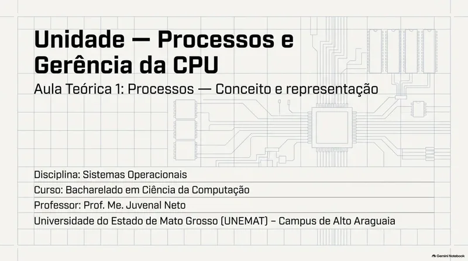
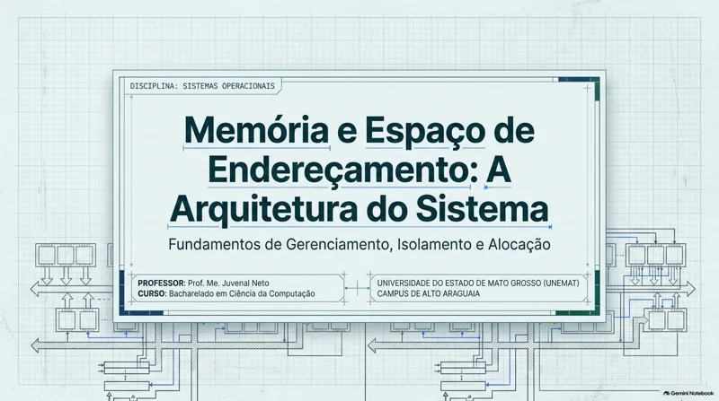
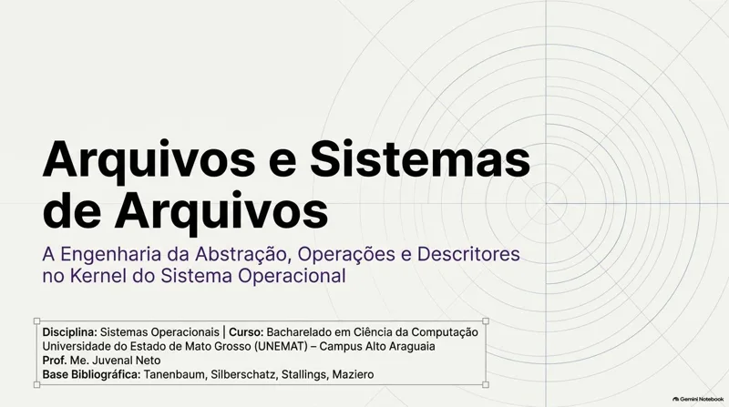

BACHARELADO EM CIÊNCIA DA COMPUTAÇÃO
Sistemas
Operacionais.
Entenda o que acontece
entre o seu código e o hardware.
Os materiais teóricos da disciplina, organizados em um percurso de estudo: dos fundamentos do sistema à gerência dos recursos da máquina.
Abstrair a complexidade. Gerenciar os recursos.
Seu material, sempre à mão. Abra os PDFs em uma nova aba ou baixe os arquivos para estudar offline.
Fundamentos de Sistemas Operacionais
O sistema por trás dos programas.
Comece pelo papel do sistema operacional: oferecer abstrações para o hardware e gerenciar os recursos da máquina. A unidade acompanha a evolução desses sistemas e apresenta o kernel, os modos de execução, as chamadas de sistema e as diferentes arquiteturas de organização interna.
- Abstração e recursos
- Kernel e privilégios
- Arquiteturas de SO
Materiais para estudo Na sequência das aulas
-
Visão geral dos sistemas operacionais
O papel do SO entre as aplicações e o hardware.
-
Evolução dos sistemas operacionais
Da execução em lote à diversidade dos sistemas atuais.
-
Modo kernel e modo usuário
Privilégios, proteção e a interface das chamadas de sistema.
-
Arquiteturas de sistemas operacionais
Organização monolítica, em camadas, modular, híbrida e microkernel.
Processos e Concorrência
Como os programas ganham vida.
Com a estrutura do SO em vista, passe ao programa em execução. Estude como processos e threads são criados e gerenciados, como disputam o tempo da CPU e por que o compartilhamento de recursos exige sincronização. A sequência termina com os mecanismos de coordenação e o problema do deadlock.
- Processos e threads
- Escalonamento
- Sincronização

Materiais para estudo Na sequência das aulas
-
Processos: conceito e representação
Programa e processo, estados e transições durante a execução.
-
Execução e gerenciamento de processos
Concorrência, troca de contexto e observação de processos no Linux.
-
Criação e controle de processos no Unix/Linux
Criação de processos, execução de programas e ciclo de vida.
-
Threads e multithreading
Fluxos de execução, recursos compartilhados e modelos de threads.
-
Fundamentos do escalonamento de processos
Decisões de alocação da CPU e métricas de desempenho.
-
Algoritmos de escalonamento de processos
Estratégias de escalonamento e comparação de seus resultados.
-
Concorrência em sistemas operacionais
Condições de corrida, região crítica e operações atômicas.
-
Sincronização e deadlock
Coordenação do acesso a recursos e condições para o impasse.
Gerenciamento de Memória
Um espaço para cada processo.
Depois de entender quem executa, investigue onde a execução acontece. A unidade apresenta os espaços de endereçamento e as técnicas de alocação, avança para a tradução de endereços por paginação e examina os custos dessas estruturas. Por fim, relaciona memória virtual, substituição de páginas e desempenho.
- Endereçamento
- Paginação e TLB
- Memória virtual

Materiais para estudo Na sequência das aulas
-
Memória e espaço de endereçamento
Hierarquia de memória, isolamento e fundamentos de alocação.
-
Técnicas de gerenciamento de memória
Organização da RAM, alocação, fragmentação e swapping.
-
Fundamentos da paginação
Páginas, quadros e tradução de endereços com MMU e TLB.
-
Paginação: estruturas e custos
Tabelas de páginas, otimização e custos de tradução.
-
Fundamentos da memória virtual
Espaço lógico, carregamento sob demanda e papel do swap.
-
Substituição de páginas em memória virtual
Algoritmos de substituição, anomalias e controle do thrashing.
Sistemas de Arquivos
Da informação aos dados persistentes.
A execução precisa de dados que permaneçam disponíveis. Explore a abstração de arquivo, as operações de acesso, os diretórios e as permissões. Em seguida, acompanhe como o sistema transforma essa visão lógica em blocos de armazenamento, gerencia o espaço livre e organiza sistemas de arquivos reais.
- Arquivos e diretórios
- Proteção
- Alocação e espaço livre

Materiais para estudo Na sequência das aulas
-
Arquivos e sistemas de arquivos
Abstrações, operações e descritores de arquivos no kernel.
-
Diretórios e proteção
Organização de nomes, hierarquia e permissões de acesso.
-
Implementação de sistemas de arquivos
Da visão lógica aos blocos físicos e métodos de alocação.
-
Gerenciamento e sistemas de arquivos reais
Espaço livre, organização dos dados e exemplos de sistemas reais.
Entrada/Saída e Armazenamento
A conexão com o mundo físico.
Feche o percurso conectando o sistema operacional aos dispositivos. Estude controladores, barramentos e técnicas de entrada e saída, compreenda a função dos drivers e relacione essas camadas à organização do armazenamento. A unidade aproxima as abstrações de software das características e dos limites do hardware.
- Dispositivos e E/S
- Device drivers
- Armazenamento
Materiais para estudo Na sequência das aulas
-
Gerência de entrada e saída
Dispositivos, controladores, barramentos e comunicação com o hardware.
-
Gerência de dispositivos e técnicas de E/S
Sondagem, interrupções, DMA, buffers e cache.
-
Arquitetura de device drivers
A interface entre o SO e os dispositivos, com proteção e isolamento.
-
Armazenamento em sistemas operacionais
Organização, desempenho, particionamento, formatação e montagem.
CONTINUE O ESTUDO
Outra forma de
acompanhar o conteúdo.
Retome os conceitos com as explicações em vídeo da disciplina. Acesse a playlist completa no YouTube e escolha o tema que deseja revisar.
Acessar playlist no YouTube (nova aba)DA TEORIA À PRÁTICA
Experimente os conceitos.
Continue com as atividades de Sistemas Operacionais disponíveis no portal.